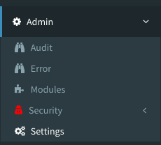

									<div class="row">
										<div class="12u">

											<p>You should now be able to launch a Web browser and see your new web application. To log in using the root account the default password is <em>Password1</em>. <u>Please change it ASAP</u>.</p>

											<p>Once logged in for the first time, you should be greeted by the welcome page shown below:</p>
											<span class="image main"></span>

											<p><span class="image right"></span>The first step in configuring the Web application is to load the Settings administration page located the <em>Admin > Settings</em> menu to load the custom application settings from the <em>.settings-env</em> file configured in a previous step.</p>

											<p><span class="image right"></span>Initially, the page will be mostly blank and not show any settings. That is because they have not been loaded from the settings file. Click on the <em>Load</em> button to have the web application read all the settings from the file.</p>

											<p>Once the settings loaded, the web application will look and behave the way you have it configured in the settings file. From that point on you can easily add and edit the settings from the <em>Admin > Settings</em> page to change the configuration.</p>
										</div>
									</div>

					              {% include footer.html prev_page="migration" prev_title="Migration" next_page="authenticationandauthorization" next_title="Authentication & authorization" %}


